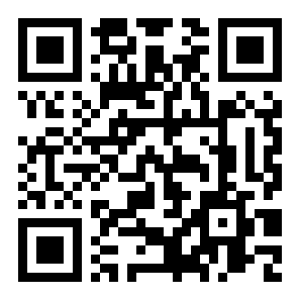

Líneas de pouches · se cuenta por carro · App Actividad · Mama's Creations · East Rutherford
Cómo se usa Actividad en cualquier cuarto

Escanea para abrir las guías de todos los cuartos en el teléfono: jose2724.github.io/actividad/guia · Dudas o algo que no funciona: avísale a Jose García. Guía de octubre de 2026.